TGS2014の写真を参考に会場の様子や雰囲気を事前に把握しておきましょう。ただしTGS2015は、TGS2014と必ずしも同じではありませんので写真はイメージとしてご覧ください。
今年は、幕張メッセ南側の1-8ホール、北側の9-11ホールの全館を使用します。
幕張メッセのMAPはコチラ
一般来場者の初回入場ゲートは、1-8ホール側と９-11ホール側（11ホール1階）に、それぞれ1カ所ずつ設けます。
1-8ホール側は、幕張メッセ「西広場」で手荷物検査を受けてから、会場に進んでいただきます。待機列ができている場合は、案内に従って、列の最後尾にお並びください。
今年は、開場時は8ホール１階入口からご入場いただき、ある程度入場が進んでからは、１ホール１階入口からご入場いただく予定です。
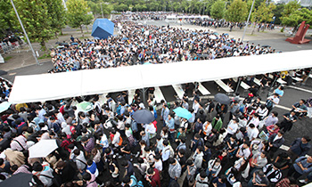
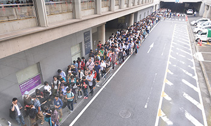
9-11ホール側は、11ホール屋外の１階エリアで手荷物検査を受けてから、11ホール１階入口からご入場いただきます。待機列ができている場合は、案内に従って、列の最後尾にお並びください。
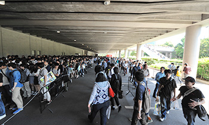
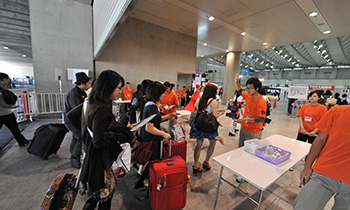
最初に1-8ホール側から入場するか、9-11ホール側から入場するか、目的のコーナーやエリアの場所をご確認の上、ご検討ください。 ただし、1-8ホールの混雑状況により、9-11ホール側からしかご入場いただけない場合がございますことを、あらかじめご了承ください。
なお、9-11ホール側からご入場される方は、以下についてご注意ください。
※入場ができるのは16時までです(再入場は16時30分まで)。
TGS2015サポーターズクラブチケットをお持ちの方は、開場から一定時間は、1-8ホール側からでも、9-11ホール側からでも優先レーンにてご入場いただけます（一般来場者の入場待機列とは異なります）。
ただし、サポーターズクラブチケットで9-11ホール側からご入場される方は、その場で特典グッズ（Tシャツ、ピンバッジ）の受け取りができません。各自、11:30以降に1-8ホール2階コンコースの5ホール前インフォメーション（右写真）でお引き換えください。
1-8ホール側からご入場される方は、手荷物検査のあと、専用受付でチケットの確認と特典グッズ（Tシャツ、ピンバッジ）の受け取りを済ませ、優先入場レーンにお進みください。
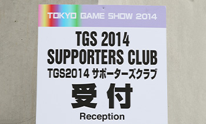
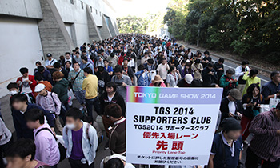
なお、サポーターズクラブチケットをお持ちの方の専用受付と優先入場レーンは、事務局が予定した時間になりますと終了いたします。その後は、一般来場者と同じ入場動線となります。1-8ホール側からご入場の場合も、専用受付終了後の特典グッズの引き渡しは、2階コンコース 5ホール前のインフォメーションで当日（有効日）のみ行います。
開場は10時を予定していますが、サポーターズクラブチケットなど一部券種は、入場時間を繰り上げることがあります。
また、東京ゲームショウでは、ご来場にあたり、徹夜行為は一切禁止しております。お守りいただけない方は入場をお断りいたしますので、あらかじめご了承ください。
入場に際しては、安全確保を目的に、ご来場者全員の手荷物検査を実施いたします。持込禁止物の会場内へのお持ち込みは固くお断りさせていただきます。荷物はなるべく少なめに、手荷物検査をしやすい状態でご来場ください。
荷物の多い方（コスプレ参加の方など）は入場に時間がかかることが予想されます。お時間に余裕を持ってご来場ください。ペットボトルの中身を確認させていただく場合があります。
いったん幕張メッセの外に出て再入場される方、および各種専用入口（車いすの方専用入口、CESA会員校・出展校専用入口、ファミリーコーナー入口など）からご入場の方も手荷物検査があります。一般来場者の初回入場口の手前以外にも1-8ホール側は、東エントランス、中央エントランス、西エントランス、9-11ホール側は、メッセモールに手荷物検査場を設けておりますので、ご協力をお願いいたします。
幕張メッセのMAPはコチラ
東京ゲームショウ2015では、場内の混雑緩和、危険防止のために、一部の出展社について、「ゲームタイトル体験整理券」「イベントステージ入場整理券」などを配布する予定です（いずれも限定枚数。枚数は各社によって異なります）。
整理券は、1-8ホール側の一般来場者入場口からお入りいただいた方のみが受け取れます（先着順）。
整理券を配布するタイトルやイベント、その配布方法は、会期直前に発表する予定ですので、公式サイトの「整理券の配布について」をお読みください。
ファミリーコーナーは、今年は1ホールにあります（ファミリーコーナーの概要はコチラ ）。小学生以下のお子様と同伴の保護者の方は、初回入場口として、ファミリーコーナー専用入口（１ホール２階コンコース）がご利用いただけます。
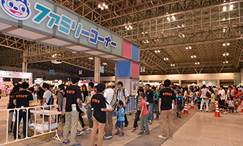
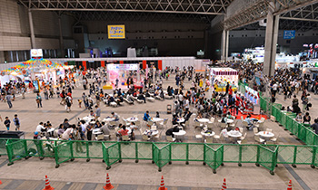
ただし、開場時間から10時30分までは、ファミリーコーナーから出ることができません。 10時30分より前にご来場になり、2-8ホールの一般展示を最初にご覧になりたい方は、一般来場者と同じ入口（幕張メッセ西広場経由）からお入りください。
ファミリーコーナーでは、小学生以下のお子様が、無料でアトラクションが楽しめるクーポン も用意しています。クーポンのプリントアウトを忘れずにご持参ください。 ファミリーステージの詳細は会期直前に発表します。公式サイトの「ファミリーステージプログラム」をご確認ください。
なお、会場内には迷子のお子様を保護する「迷子センター」を設けますが、呼び出しを一切しておりません。お子様が迷子にならないようにご注意ください。
東京ゲームショウ 2015では、ファミリーコーナーの一角に、中学生も入れるエリア「ファミリーコーナープラス」を初めて設置します。一般展示コーナーに出展している人気タイトルなどが、中学生以下であれば専用台で遊べます。
小学生以下のお子様とその同伴者は、ファミリーコーナー専用入口（1ホール2階コンコース）から入ることができます。中学生のみの場合は、一般来場者と同じ入口（幕張メッセ西広場経由）からお入りいただき、１ホールのファミリーコーナープラスまでお越しください。
なお、開場時間から10時30分までは、ファミリーコーナー（ファミリーコーナープラスも含む）から出ることができません。一般来場者入口から入場した方も、10時30分より前にファミリーコーナー（ファミリーコーナープラスも含む）に入ると、10時30分まで出ることができませんのでご注意ください。
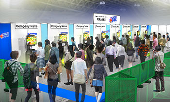
東京ゲームショウ2015では各種専用入口を各ホール2階に設けます。 ファミリーコーナー専用入口、CESA会員校・出展社校専用入口、付添いが必要な身体障がい者や車いすの方の専用出入口、TGSオフィシャルツアー専用入口など、該当する方は利用できます。一般来場者は入場できません。
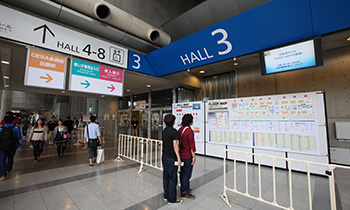
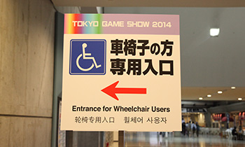
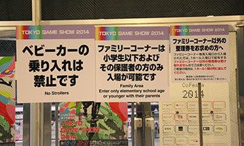
なお、各種専用入口からご入場された方は、1-8ホール側一般来場者入口で配布予定の、「ゲームタイトル体験整理券」や「イベントステージ入場整理券」などは受け取れません。 各種整理券を受け取りたい方は、1-8ホール側一般来場者入口からご入場ください（限定枚数なので配布が終了している可能性もあります）。

2002-2015 CESA / Nikkei Business Publications, Inc. All rights reserved.